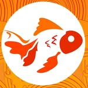

解剖Anatomía de un roll
Desliza y recorre un Acevichado Roll, capa por capa.
解剖Anatomía de un roll
El nuevo integrante de la familia
Todo lo que viste, en una sola pieza.

金魚Kingyo Sushi & Fusión
Pérez Zeledón & Bijagua, Costa Rica.